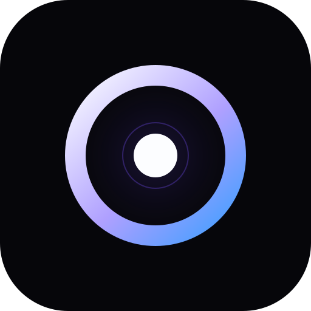
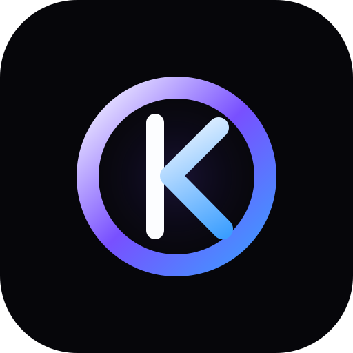

1. O Core
Um O forte com núcleo central. É o caminho mais limpo e elegante, focado na ideia de centro operacional pessoal.
Mais premium
OrkestOS
Rodada v2: opções mais simples, com menos elementos e melhor leitura em tamanho pequeno. Todas mantêm a base premium/minimalista com acento roxo/azul.

Um O forte com núcleo central. É o caminho mais limpo e elegante, focado na ideia de centro operacional pessoal.
Um O aberto com gesto de comando. Comunica controle, operação e sistema, com mais personalidade tecnológica.

Um monograma O + K. É o mais proprietário e memorável, com leitura de marca mais exclusiva.